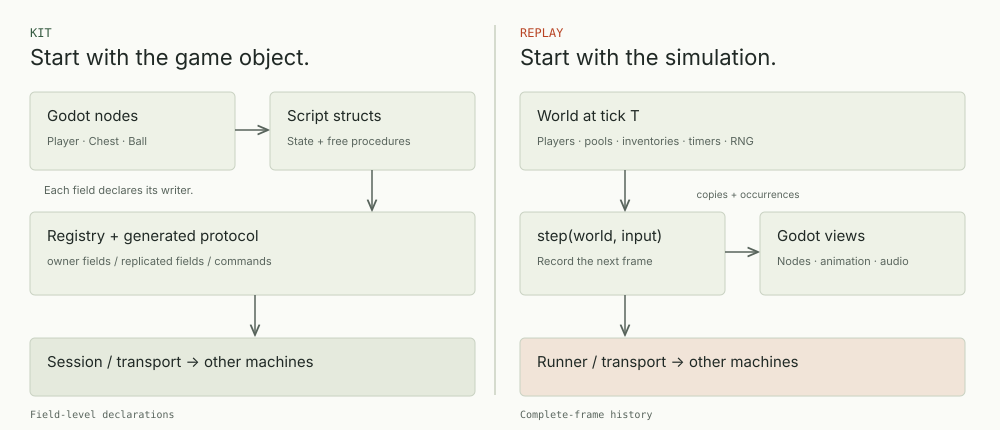
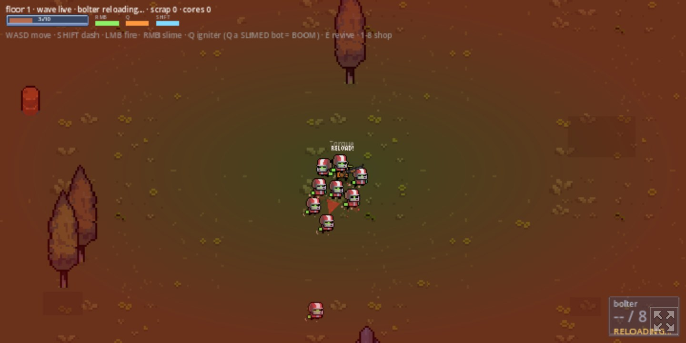
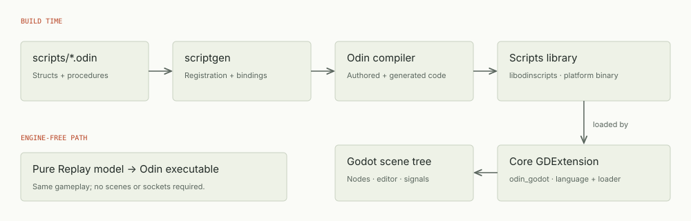
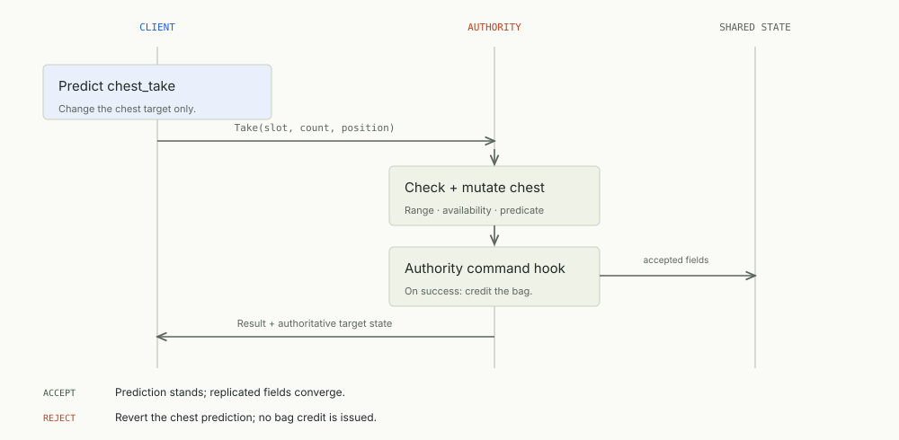
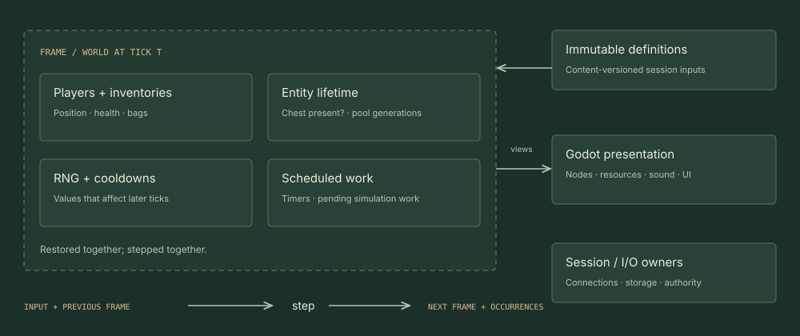
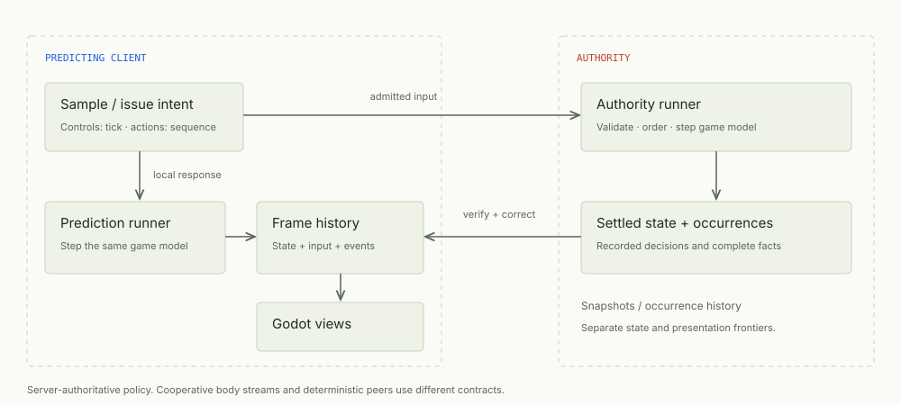

ENGINEERING / MULTIPLAYER SYSTEMS
A world on
every machine.
Making a game with Odin and Godot means deciding where state lives, who can change it, and what happens when two machines disagree.


Suppose two players reach the same chest and both press Take. Each client predicts the pickup so its screen responds immediately. The authority, the process allowed to accept shared gameplay changes, chooses the winner. The losing client then needs to correct its prediction.
The SDK includes two independent frameworks for writing that game. Kit uses script entities, tagged fields, and generated commands. Replay uses a typed World, recorded inputs, and a step function. Their state boundaries become important when one action changes several entities.
Both frameworks support cooperative games and server-authoritative prediction. Kit chooses replication and prediction rules per field. Replay records the state needed to restore a simulation frame. This guide follows the same pickup through both designs.
Take it into the yard.
Scrapyard is an arena shooter built with Odin and Godot. Play the browser build on itch.io, then use the Replay port’s guides to trace input, simulation, and Godot views.

Play ScrapyardThe repository’s Replay port has a visual contributor guide and a file-by-file code guide covering input, World, session startup, and Godot views.
Godot is still the editor.
Author scenes, place nodes, connect signals, and use the Inspector in Godot. An Odin node script consists of a struct and free procedures attached to an engine node. Its first field, owner, holds the node handle. self points to the script data; self.owner refers to the engine node.
The build runs scriptgen to generate registration and argument wrappers, then compiles the scripts library. The core GDExtension registers Odin with Godot and loads that library. Kit works directly with registered script entities; Replay keeps simulation state in a separate Odin model.


Read the implementation guide: project wiring · scripts and structs
Start with the object.
Declare its writers.
In Kit, an entity is a registered game object with a type, network ID, and optional network owner. Field tags determine which machine writes each value and how it is synchronized. Authority-written state such as health uses gd:"replicate". Cooperative motion can use gd:"owner": the entity’s owning player writes its pose, while other machines interpolate received samples.
The small player in examples/hello_net makes this split visible:
Player :: struct {
owner: gd.Node2d,
skin: gd.Polygon2d `gd:"onready=Skin"`,
net_id: knet.Net_Id,
x, y: f32 `gd:"owner,wire=f16"`,
pid: u8 `gd:"replicate"`,
mine: bool,
tinted: bool,
}A Kit command represents an interaction such as taking an item. Its @(gd_command) procedure validates the request and mutates the target entity. The generated wrapper submits the request, optionally predicts it locally, and delivers the authority’s result. Accepted changes are synchronized through field replication.
A predicted Kit command mutates only its target. The chest command removes the item from the chest. The authority command hook credits the player’s bag after acceptance. Put further consequences, such as a quest update, in that hook rather than in the predicted target mutation.


Kit’s simulation lane, kit/sim, advances predicted fields at fixed ticks. It uses gd:"predict,interp" and a pure @(gd_tick) procedure. In Hello Sim, the authority judges movement and the client predicts its own square from the same tick code.
Make the whole tick
restorable.
The pickup can empty the chest, credit a bag, remove the chest entity, and advance a quest. If a correction restores only the chest, the bag and quest still describe the rejected pickup.
Replay stores mutable gameplay dependencies in World. A frame contains this state at a particular simulation tick. The runner is the runtime that schedules steps and retains frames and inputs. Each step produces the next frame and occurrences: recorded gameplay events that presentation can match across a correction. An action can change several entities within the same World.
World :: struct {
players: [2]Player,
entities: r.Pool(Entity, 16),
chest: r.Handle(Entity),
rng: r.Rng,
}
// Inside step, after movement and the range check:
amount := chest.items
p.bag += amount
r.pool_remove(&w.entities, w.chest)
r.emit(ctx, u64(i + 1), u64(control.seq) << 8 | 1,
Event{.Item_Taken, u8(i), p.x, amount})The next tick depends on positions, random-number-generator state, cooldowns, pending work, entity lifetime, and allocation metadata such as used pool slots and generation numbers. These values belong in the frame so they can be restored together. Node references, sockets, textures, and audio playback stay outside the simulation.


A step reads its state, typed input, simulation tick, and fixed definitions. The recorded frame cannot reproduce a value read from the wall clock or a live Godot transform. A sound played inside the step would play again when the runner replays that tick.
Use emit to record an occurrence with the identity (epoch, tick, source, key). The presentation journal matches the previous and replacement records and reports Begin, Update, Confirm, or Cancel. Confirmation means the authority or commit protocol has settled that tick; a local input revision alone does not confirm it. Presentation code uses those notifications to manage effects outside the simulation.
Frame and transaction contract · Presentation journal · Complete loot model
Change the winner.
Rebuild the consequences.
The local Loot executable predicts that player A takes five items at tick 1. At tick 8, it revises that input: player B took them. The runner restores tick 0 and rebuilds ticks 1–8. An independent run with the corrected input checks the result.
Apply the correction below, then replay one tick at a time. The view previews frames being rebuilt and the pending changes to the presentation journal. The runtime would publish the revision only after all eight transitions succeed.
Prediction has A’s take. The corrected reference gives the items to B.
Predicted head at tick 8. A has taken the chest.
This JavaScript illustration models a pickup at tick 1 and an unrelated projectile at ticks 2–4. Run the Odin Loot example to exercise the actual runtime, including pool allocation and RNG restoration.
The local experiment uses revise_input to replace a recorded input batch. In network play, the network runner verifies authority state before calling correct. Correction restores that frame and replays the locally predicted ticks after it. The local revision demonstrates replay; the session layer establishes who may supply authority state.
All replacement frames are staged before the revision is published. If a step fails, the managed timeline retains its previous state. This transaction covers frame values; it cannot undo audio, a file write, or a global mutation performed by the callback.
One screen can show
two different moments.
Your own avatar responds to current input. A remote avatar usually comes from a short buffer of received state. Showing the remote player at the current local tick would require predicting their next input.
If a remote player picks up a gem, removing it as soon as the update arrives can make it vanish before the displayed avatar reaches it. A watched view is this buffered remote view. Its pickup effect needs to follow the same display clock as the avatar.
now−100 msIllustrative display offset. This slider is not round-trip latency or a recommended interpolation setting.
A shared ball needs a further presentation choice. Kit’s Claimball predicts the local player and the ball while showing the opponent from buffered history. A presentation claim blends the ball toward the locally predicted pose while the local player is driving it. As that influence ends, the ball blends back toward the watched view. The authority continues to judge gameplay throughout this display change.
Saving a Godot rigid body’s pose does not save the solver’s contact history. Replay’s cooperative owner-stream profile records accepted observations of the engine’s body simulation. Replaying the Godot contact solver would require a separate deterministic simulation contract.
Choose who decides.
Choose the authority and trust model for your game. A listen host runs in a player’s process. A dedicated authority runs without a local player. Run a dedicated competitive authority on trusted infrastructure. Deterministic peers instead exchange inputs and reproduce the same steps. Start with the smallest example that uses your intended policy.


| Question | Kit | Replay |
|---|---|---|
| Where do I write gameplay? | Script structs, generated commands, optional sim ticks. | A typed World with step/action callbacks, outside the scene tree. |
| What is restored? | The predicted command target, plus history for fields in the fixed-tick simulation lane. | A complete frame for the simulation group: the entities and saved boundary values replayed together. |
| How do I change several entities? | Keep command prediction target-local; use the authority hook for consequences. | Mutate the frame’s entities in the same simulation operation. |
| How does Godot draw it? | Generated presentation fields and per-frame script code. | Copied views and identity-aware occurrence changes. |
| What should I read first? | Kit quickstart, then Hello Sim. | Choosing a runner, then Loot and Hello. |
A small game with
a useful failure case.
Build one room, two players, and a chest with one item. Add movement first, then make both players take the item under injected delay. This gives prediction, authority, and correction something observable to do before you add combat or procedural content.
- 1
Get a square on screen.
Use
examples/hello_netfor Kit or the Session starter for Replay. Find the code that samples input, advances gameplay, and updates the node before adding an interaction. - 2
Choose one pickup winner.
Kit: put the chest mutation in a command and bag credit in its authority hook. Replay: put both bags, the chest, and its lifetime in World. Define how simultaneous requests are ordered.
- 3
Force the prediction to lose.
Delay the connection or revise the local Loot input. Check that the losing inventory is repaired and its pickup effect is canceled. Repeating the correction should not duplicate an effect.
- 4
Move to the intended session policy.
Kit: compare owner movement with Hello Sim’s authoritative tick. Replay: use Session for the direct server/client lifecycle, Party → Room for invitations and migration, or the admitted P2P runner for deterministic peers.
Run these commands from the repository root. The development shell supplies the pinned toolchain and the GODOT executable.
Once the pickup works, add a cooldown that gates movement, a projectile with a lifetime, or a moving door. For each addition, identify the values a correction must restore to reproduce the following tick.
Diagrams and reading.
The diagrams are standalone SVG files. The documentation index brings together the tutorials, architecture notes, and examples behind this guide. Each page includes its original source as a download.

Repository sources are the authority for API details. Diagrams and browser models are explanatory artifacts.